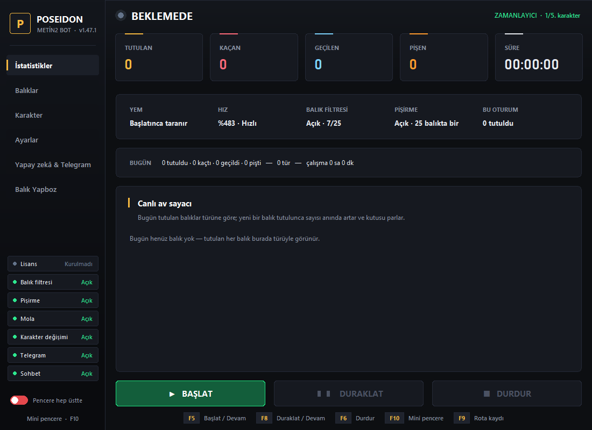
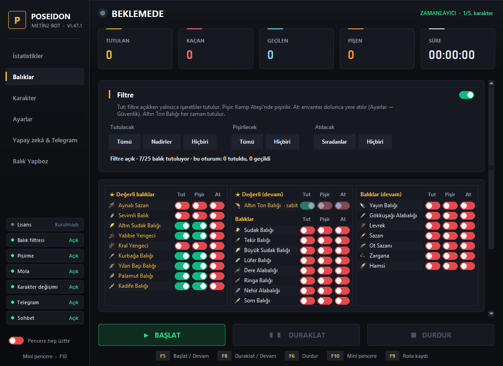
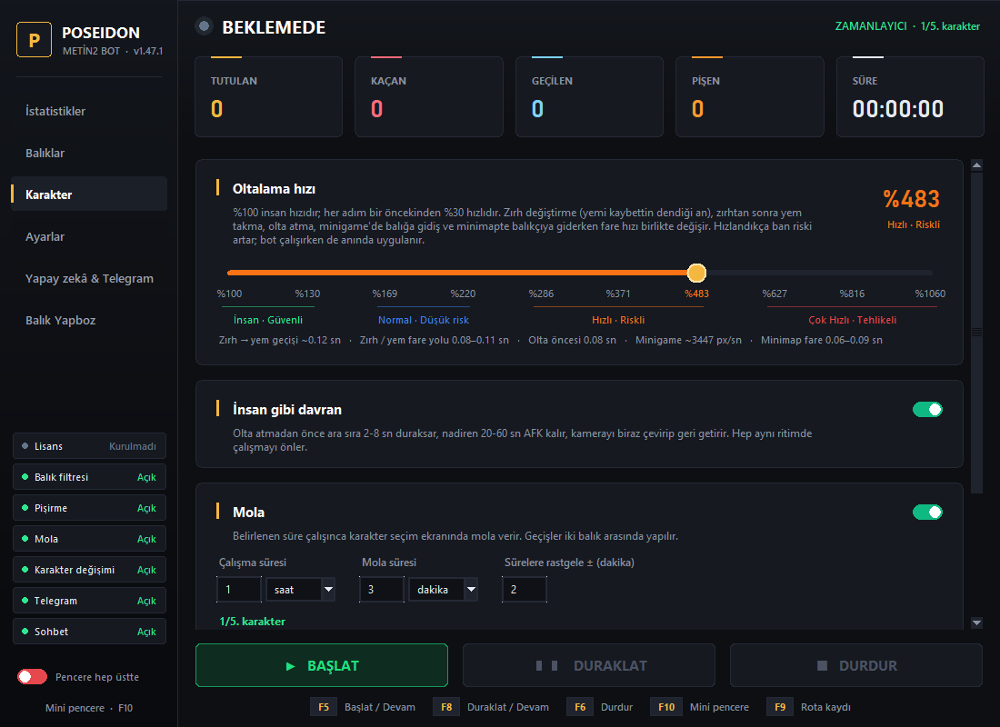
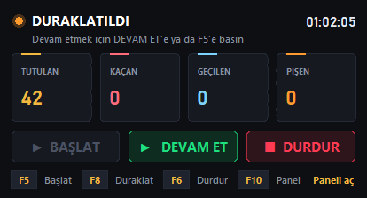

Balık tutmayı Poseidon'a bırakın.
Yem takar, oltayı atar, minigame'i oynar, istediğiniz balıkları tutar, pişirir. Siz başka işle uğraşırken bot çalışır; durumu telefonunuzdan Telegram ile izlersiniz.

Özellikler
Oyunun belleğine dokunmaz; ekrana bakıp fare ve klavye ile, bir oyuncu gibi çalışır.
Tam otomatik döngü
Yem takma, olta atma, minigame ve sonucun okunması kendiliğinden; zırh değiştirerek animasyonu kısaltır.
Yem bitince balıkçı
Yem azalınca minimapten balıkçıya yürüyüp solucan alır ve kaldığı yere döner. Kayıtlı rota da kullanılabilir.
Balık filtresi
Hangi balıkların tutulacağını siz seçersiniz; istemedikleriniz oltadan bırakılır. Altın Ton Balığı her zaman tutulur.
Pişirme ve yere atma
Seçtiğiniz balıkları Kamp Ateşi'nde pişirir; envanter dolunca işaretli balıkları yere atar.
Mola ve karakter değişimi
Belirli sürelerle mola verir, sıradaki karaktere geçer. Sürelere rastgele sapma eklenebilir.
İnsan gibi davranış
Ayarlanabilir hız, ara sıra duraksama, kısa AFK anları ve kamera hareketleri ile hep aynı ritimde çalışmaz.
Güvenlik önlemleri
Sohbette GM ya da "bot musun" sorusu görülünce, can azalınca veya bağlantı kopunca durur ve haber verir.
Telegram ile uzaktan kontrol
Başlat, durdur, ekran görüntüsü, istatistik ve günlük rapor telefonunuza gelir.
Oyun içi sohbet
Size yazanlara yapay zekâ ile kısa, doğal cevaplar verir; mesajları Telegram'a iletir.
Mini pencere ve kısayollar
F5 başlat, F8 duraklat, F6 durdur; F10 ile oyunun yanında duran küçük pencere.
Otomatik güncelleme
Yeni sürüm çıkınca bot kendini günceller; ayarlarınız ve key'iniz korunur.
Canlı istatistik
Tutulan, kaçan, pişen balıklar ve türlere göre günlük sayaç.
Ekran görüntüleri
Tek, sade bir panel: her ayar kendi sekmesinde.



Nasıl satın alınır?
Dört adımda başlarsınız.
Telegram'dan yazın
İstediğiniz paketi söyleyin; ödeme bilgilerini size özelden iletiriz.
Havale / EFT yapın
Açıklamaya yalnızca Telegram kullanıcı adınızı yazın, dekontu gönderin.
Key'iniz gelsin
Ödeme görülünce key'iniz Telegram'dan gönderilir.
İndirip başlayın
Poseidon kurulum paketini (~69 MB) indirin, bir klasöre çıkarın, Poseidon klasöründeki Launcher.exe'yi açın. İlk açılışta en son sürüm kendiliğinden kurulur; sonra key'i girin.
Sık sorulan sorular
Neler gerekiyor?
Windows 10 ya da 11 ve Metin2 istemcisi. Ekstra program kurmanız gerekmez; Launcher güncellemeleri kendisi indirip kurar. Oyun penceresinin 800×600 boyutta ve ekranda görünür olması önerilir.
Key'i başka bilgisayarda kullanabilir miyim?
Key ilk girildiği bilgisayara bağlanır. Bilgisayar değiştirirseniz Telegram'dan yazın.
Güncellemeler ücretli mi?
Hayır. Key süreniz boyunca çıkan tüm güncellemeler ücretsizdir ve bot kendini otomatik günceller.
Bot açıkken bilgisayarı kullanabilir miyim?
Bot fare ve klavyeyi kullandığı için çalışırken bilgisayarı kullanmamanız önerilir. Duraklat (F8) ile istediğiniz an araya girebilirsiniz.
Ban riski var mı?
Evet. Botlar oyunun kullanım şartlarına aykırıdır ve hesabınızın kapatılmasına yol açabilir. Bot riskleri azaltan önlemler içerir, ancak ban olmayacağı garanti edilemez. Kullanım riski tamamen kullanıcıya aittir; ban nedeniyle iade yapılmaz.
İade var mı?
Key bilgisayara bağlandıktan sonra iade yapılmaz. Satın almadan önce sorularınızı Telegram'dan sorabilirsiniz.